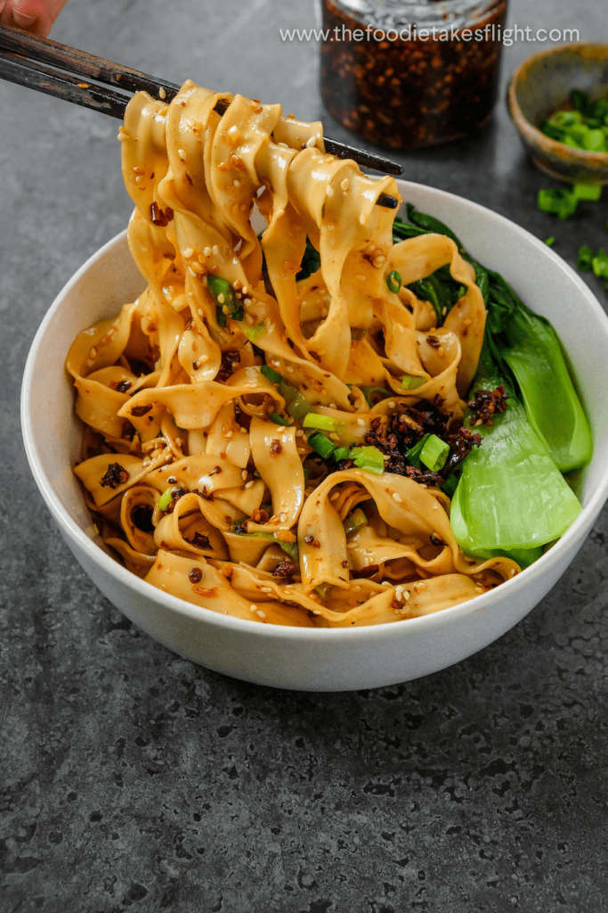

Odin Recipes

Chilli Oil Noodles
This quick & easy chili oil noodles recipe features thick noodles tossed in an incredibly flavorful sauce, to be prepared in just 10 minutes! Topped with cilantro and green onions, these spicy and garlicky noodles are simple to make but loaded with scrumptious flavor.
Ingredients
- Thick Wheat Noodles
- Garlic, Chilli Flakes, Green Onion (For Aromatics)
- Light and Dark Soy Sauce, Chinese Black Vinegar, Salt and Sugar
- Neutral Oil
- Cilantro, Green Onion, Toastes Sesame Seeds and/or Sesame Oil (For Garnish)
- Feel Free to Add Meat, Eggs or any Vegetables (Optional)
How to Prepare the Chilli Oil Noodles?
- Boil the noodles in a pot of water until al dente. Drain and set aside.
- Heat the oil in a wok or pan over medium heat. Add the garlic, chili flakes, and green onion. Cook for 1 minute, stirring constantly, until fragrant.
- Remove from heat and add the soy sauce, vinegar, salt, and sugar. Stir to combine.
- Add the noodles to the wok and toss to coat in the sauce.
- Transfer to a serving bowl and garnish with cilantro, green onion, sesame seeds, and/or sesame oil.